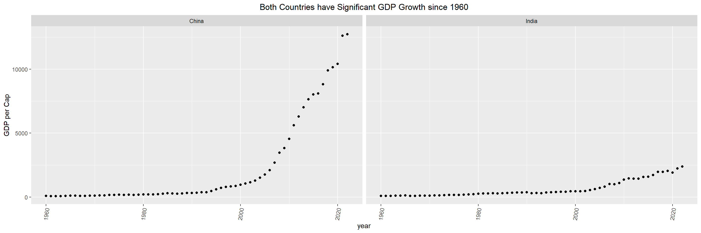
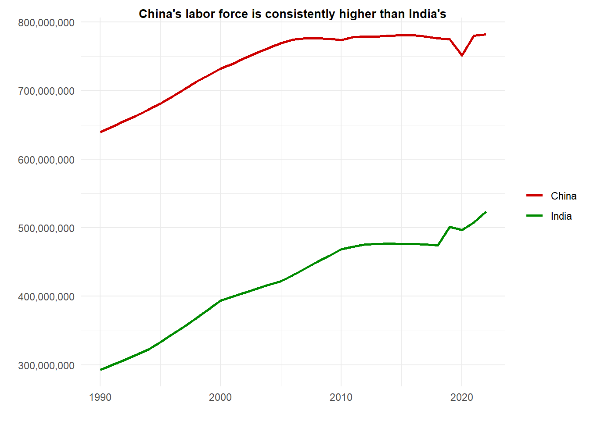

3.0.1 Temporary Headings. Replace with something meaningful that summarizes the plots we create
3.1 How have China and India’s growth stories differed?
Code
library(tidyr)library(tidyverse)
── Attaching core tidyverse packages ──────────────────────── tidyverse 2.0.0 ──
✔ dplyr 1.1.4 ✔ purrr 1.0.2
✔ forcats 1.0.0 ✔ readr 2.1.4
✔ ggplot2 3.4.4 ✔ stringr 1.5.1
✔ lubridate 1.9.3 ✔ tibble 3.2.1
── Conflicts ────────────────────────────────────────── tidyverse_conflicts() ──
✖ dplyr::filter() masks stats::filter()
✖ dplyr::lag() masks stats::lag()
ℹ Use the conflicted package (<http://conflicted.r-lib.org/>) to force all conflicts to become errors
Code
library(ggplot2)library(scales)
Attaching package: 'scales'
The following object is masked from 'package:purrr':
discard
The following object is masked from 'package:readr':
col_factor
ggplot(GDP_vals, aes(year,`GDP per Cap`)) +geom_point(color ="Black") +stat_smooth(method ="loess", se =FALSE, span =0.5)+facet_wrap(Country~.)+ylab("GDP Per Capita (US$)")+xlab("Year")+theme(axis.text.x =element_text(angle =80, vjust=0.5))+ggtitle("Historically China has Significantly Higher GDP Per Capita")+theme(plot.title =element_text(hjust =0.5))
`geom_smooth()` using formula = 'y ~ x'

Gross domestic product (GDP) per capita is a metric that describes a country’s economic output per person, so a high value indicates a stronger economy; GDP per capita is also a better measure for comparing overall economy than nominal GDP because it takes into account because it takes population size into account, which is especially important for China and India because they are the two most populous countries in the world. From this scatterplot with fitted line, we see that while both China and India have had growing GDP per capita levels since 1960, since 2000 China’s has skyrocketed compared to India’s. As of 2020, the difference between their GDP per Capita is over $10000. When looking at GDP growth without considering other factors, it appears that if current trends continue, it will take many years for India’s GDP per Capita to surpass China’s.
Code
ggplot(GDP_growth, aes(year,Country, fill =`GDP Growth %`)) +geom_tile(color ="Black") +theme_minimal() +theme(axis.text.x =element_text(angle =80, vjust=0.5))+ggtitle("China's GDP has Generally Grown Faster than India's since 1960")+scale_fill_gradient2(low =muted("orange"),mid ="white",high =muted("green"),midpoint =0 )+theme(plot.title =element_text(hjust =0.5))

We use the United States’ GDP growth as a benchmark for comparison because it is considered the largest economy in the world because it has the highest nominal GDP out of any country.
3.1.1 What is the reasoning for these differences?
Parallel coordinates
2 way bar chart with exports going one direction and imports going the other direction